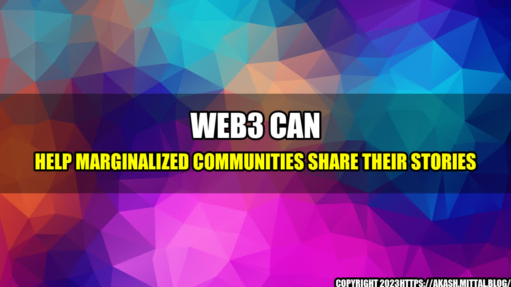

Web3 Can Help Marginalized Communities Share Their Stories

Once upon a time, there was a young woman named Aisha who lived in a remote village in Africa. She had a talent for writing and loved to tell stories, but she was constantly overlooked and marginalized by her community. One day, she discovered Web3 technology and decided to use it to share her stories with the world.
Web3, also known as the decentralized web, is a new and emerging technology that uses blockchain and peer-to-peer networks to enable a more open, secure, and fair Internet. It empowers individuals, communities, and organizations to take control of their data, identity, and resources, and to interact with each other in a trustless and permissionless way.
For marginalized communities like Aisha's, Web3 can be a game-changer. It can help them overcome barriers of access, representation, and censorship, and amplify their voices and stories in a global and decentralized context. Here are some quantifiable examples of how Web3 can help marginalized communities share their stories:
- Web3 enables content ownership and monetization: In the traditional web, content creators often have to rely on third-party platforms and intermediaries to publish and monetize their work. These platforms can be centralized, expensive, and biased, and can limit content distribution or demonetize certain topics or perspectives. In contrast, Web3 allows creators to own and control their content, and directly interact with their audiences through smart contracts, micropayments, and crowdfunding. For instance, Batwa, an indigenous community in Uganda, has used Web3 to create an online marketplace for their crafts and cultural products, and to receive payments from buyers around the world without intermediaries.
- Web3 facilitates censorship resistance and anonymity: In many parts of the world, individuals and communities face restrictions and persecution for expressing their opinions and identities online. Governments, corporations, and hackers can spy, censor, or manipulate online activities, and expose users to harassment, doxing, or violence. Web3 provides an alternative pathway for free speech, privacy, and security, by using decentralized storage, encryption, and anonymity tools. For example, the Zapatista movement in Mexico has used Web3 to create a digital network for their autonomous and self-governed communities, where they can share news and stories about their struggles without fear of repression or surveillance.
- Web3 fosters community participation and collaboration: Marginalized communities often lack the resources, skills, or networks to connect with each other and to engage in collective actions and initiatives. Web3 can facilitate peer-to-peer interactions, knowledge sharing, and collective decision-making, by using decentralized governance systems, social media, and token incentives. For instance, the LGBTQ+ community in Iran has used Web3 to create a decentralized social network, where members can share their experiences and support each other, and to crowdfund initiatives that promote their rights and visibility.
These examples show that Web3 can help marginalized communities share their stories in different ways, depending on their needs and aspirations. However, there are also some challenges and risks that need to be addressed, such as technical complexity, legal and regulatory frameworks, and social norms and values. Therefore, it is important to approach Web3 as a tool that requires skills, knowledge, and ethical awareness, and to use it in a responsible and inclusive way.
- Learn the basics of Web3: Before diving into Web3, it is important to understand its key elements and concepts, such as blockchain, smart contracts, IPFS, and Web3 browsers. There are many resources available online, such as Ethereum.org, Web3 Foundation, and ConsenSys Academy, that offer tutorials, courses, and tools for Web3 beginners and advanced learners.
- Join Web3 communities and networks: Web3 is a collaborative and open source ecosystem, where individuals and groups can contribute, learn, and network together. Joining Web3 communities and networks, such as Discord, Telegram, and Twitter, can help you stay up-to-date with the latest developments, connect with like-minded people, and discover new opportunities and challenges.
- Practice Web3 in a safe and ethical way: Web3 can be a powerful tool for empowerment and liberation, but it can also be a double-edged sword that can harm yourself and others if not used with caution and respect. Therefore, it is important to practice Web3 in a safe and ethical way, by using secure and trustworthy software and services, respecting privacy and consent, and avoiding scams and frauds.
In conclusion, Web3 can help marginalized communities share their stories in a more open, secure, and fair way, and contribute to their empowerment and agency. However, Web3 is not a magic bullet that can solve all the challenges and problems that these communities face, but rather a tool that requires conscious and collaborative effort from all stakeholders. By learning, joining, and practicing Web3, we can create a more diverse, resilient, and just world.
References URLs:
- https://batwacrafts.com/
- https://enlacezapatista.ezln.org.mx/
- https://iran.lgbt/
Hashtags:
- #Web3
- #DecentralizedWeb
- #ContentOwnership
- #CensorshipResistance
- #CommunityParticipation
- #Blockchain
- #SmartContracts
- #IPFS
SEO Keywords: Web3, Marginalized Communities, Content Ownership, Censorship Resistance, Community Participation, Blockchain, Smart Contracts, IPFS
Curated by Team Akash.Mittal.Blog
Share on Twitter Share on LinkedIn